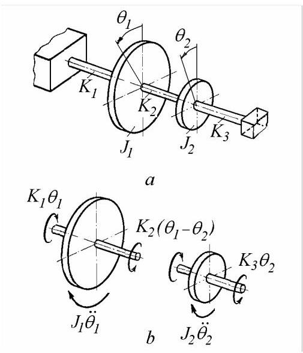
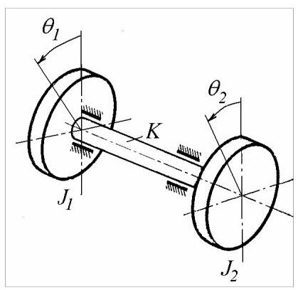
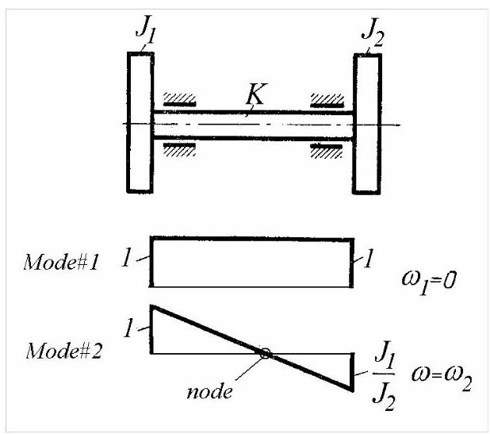
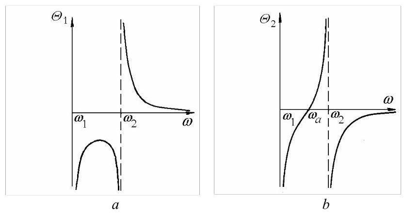
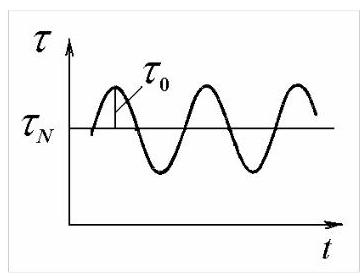

第17篇
4.2 扭转系统
下文考虑二自由度盘-轴系统，其中刚性圆盘相对于轴轴线扭转振动。
4.2.1 运动方程
考虑图4.6所示系统，\(a\)它由两个极质量惯性矩(polar mass moment of inertia)分别为\({J}_{1}\)和\({J}_{2},{\mathrm{{kgm}}}^{2}\)的刚性圆盘组成，圆盘连接在扭转刚度(torsional stiffness)分别为\({K}_{1},{K}_{2}\)和\({K}_{3},\mathrm{{Nm}}/\mathrm{{rad}}\)的无质量轴上。

图4.6
圆盘相对于平衡位置的瞬时角位置用\({\theta }_{1}\)和\({\theta }_{2}\)表示。利用图4.6的自由体图\(b\)以及达朗贝尔原理(d'Alembert's principle)(外施扭矩与惯性扭矩的动力平衡)，可写出运动方程
或
这是一组耦合微分方程，与方程(4.1)类似。平移振动与角振动系统之间存在完全类比:弹簧、质量、力的对应物分别为扭转弹簧、具有质量惯性矩的圆盘以及扭矩。第4.1节中建立的所有结果均适用于扭转系统。下文仅考虑允许刚体运动的系统。
4.2.2 双盘自由-自由系统
电机驱动的风机或泵的轴系可在轴承内作刚体旋转。许多工程系统可建模为未与地面刚性连接的双盘扭转系统(图4.7)。两个圆盘分别代表驱动机和被驱动机的转子，它们通过代表两根轴及联轴器的扭转弹簧连接。
设两圆盘的极质量惯性矩分别为\({J}_{1}\)和\({J}_{2}\)，无质量轴的扭转刚度为\(K = G{I}_{p}/\ell\)。
运动方程
可写成矩阵形式
并简记为
刚度矩阵\(\left\lbrack K\right\rbrack\)为半正定。由于系统未接地，刚度矩阵奇异。系统可自由旋转，存在势能为零的刚体运动。
显然，这是一个二自由度系统。然而，将方程(4.46)相加可得
因此两个坐标\({\theta }_{1}\)和\({\theta }_{2}\)并不独立。积分后可得约束方程，用于从问题表述中消去一个坐标。

图4.7
将方程(4.46)的第一式除以\({J}_{1}\)，第二式除以\({J}_{2}\)，然后相减可得
以扭转角\({\theta }_{1} - {\theta }_{2} = \theta\)表示，方程(4.48)变为
这是单自由度系统的运动方程。
4.2.2.1 正则模态
假设解的形式为
我们得到一组代数方程
除以\(K\)并记
方程(4.50)变为
联立齐次方程(4.52)在系数\({a}_{1}\)和\({a}_{2}\)的行列式为零时存在非平凡解
或
解为
第一阶固有频率由\({\omega }_{1}^{2} = 0\)给出，第二阶由
根\({\omega }_{1}^{2} = 0\)表示可能出现刚体位移。这可能是由于静态角位移或匀速旋转所致，并非真正的振动。方程(4.46)的解形式为
其中\({C}_{1},..,{C}_{4}\)为积分常数。
模态振型由比值\(\mu = {a}_{2}/{a}_{1} = 1 - \alpha\)确定。
对于第一阶模态
两圆盘具有相同的角位移，定义了轴未被扭转的刚体旋转。
对于第二阶模态
两圆盘反向振动。轴上存在一个节点，该节点更靠近较大的圆盘。
模态振型如图4.8所示。

图4.8
4.2.2.2 对谐波激励的响应
考虑图4.6所示系统，其中第二圆盘受到一谐波扭矩\(M\left( t\right) = {M}_{0}\cos {\omega t}\)(图中未示出)。运动方程为
该系统的稳态振动形式为
得到的代数方程为

图4.9
除以\(K\)并记\({\omega }^{2}{J}_{1}/K = \alpha\)，我们得到
利用克拉默法则求解\({\Theta }_{1}\)和\({\Theta }_{2}\)
振幅\({\Theta }_{1}\)和\({\Theta }_{2}\)随扰动频率的变化如图4.9所示。当分母为零，即驱动扭矩频率等于任一固有频率时，两个角振幅趋于无穷。存在一种“零频共振”对应刚体模态，以及一个真实共振发生在
当\(\alpha = 1\)时，第二圆盘的振幅为零。该反共振发生在\(\omega = \sqrt{K/{J}_{1}}\)，即由轴和第一圆盘组成的子系统的固有频率，该子系统作为动力吸振器，使第二圆盘在空间保持静止。
4.2.2.3 动态应力
扭转角的振幅为
记轴中的扭矩为\({M}_{t} = {M}_{{t}_{0}}\cos {\omega t}\)，其振幅为
由扭转引起的动态剪应力为\(\tau = {\tau }_{0}\cos {\omega t}\)，其幅值为
其中\({W}_{p}\)为截面的极截面模量(polar modulus)。
若轴以恒定角速度\({\omega }_{N}\)传递功率\(N\)，则“静态”剪应力为
可依据\({\tau }_{0}\)和\({\tau }_{N}\)的数值，并考虑如图4.10所示的时间历程进行疲劳计算。

图4.10
例4.4
图4.6所示的扭转系统受到幅值为\({M}_{0} = {10}^{4}\mathrm{{Nm}}\)、频率为\(\omega = {314}\mathrm{{rad}}/\mathrm{{sec}}\)的谐波扭矩作用(图中未示出)。两圆盘的极质量惯性矩均为\(J = {57}{\mathrm{{kgm}}}^{2}\)。轴长\(\ell = {0.4}\mathrm{\;m}\)，直径\(d = {0.14}\mathrm{\;m}\)，剪切模量为\(G = {81}\mathrm{{GPa}}\)。试求轴中动态剪应力的幅值。
解:轴截面具有\({I}_{p} = \pi {d}^{4}/{32} = {0.377} \cdot {10}^{8}{\mathrm{\;{mm}}}^{4}\)和\({W}_{p} = \pi {d}^{3}/{16} = {0.538} \cdot {10}^{6}{\mathrm{\;{mm}}}^{3}\)。扭转刚度为\(K = G{I}_{p}/\ell = {7.63} \cdot {10}^{9}\)\(\mathrm{{Nmm}}/\mathrm{{rad}}\)。比值\(\alpha = J{\omega }^{2}/K = {0.735}\)。扭转角为\({\Delta \Theta } = {M}_{0}/K\left( {2 - \alpha }\right) = {0.001036}\mathrm{{rad}}\)。动态扭矩幅值为\({M}_{{t}_{0}} = {M}_{0}/\left( {2 - \alpha }\right) = {7910}\mathrm{{Nm}}\)。动态剪应力幅值为\({\tau }_{0} = {M}_{{t}_{0}}/{W}_{p} = {14.7}\mathrm{\;N}/{\mathrm{{mm}}}^{2}\)
Matlab Demo
模态分析: 计算并显示系统的两个固有频率和对应的振动模式（模态振型）。
模态动画演示: 通过动画直观地展示“刚体模式”和“扭转振动模式”下两个圆盘的运动形态。
谐波响应分析: 计算并绘制在外加谐波扭矩作用下，系统响应振幅随频率变化的曲线，复现教材中的图4.9。

%% 1. 初始化
clear; % 清除工作区变量
clc; % 清空命令行窗口
close all; % 关闭所有图形窗口
%% 2. 系统参数定义
J1 = 2; % 转盘1的转动惯量 (kg*m^2)
J2 = 1; % 转盘2的转动惯量 (kg*m^2)
K = 2; % 连接轴的扭转刚度 (Nm/rad)
M0 = 1; % 施加在转盘2上的谐波扭矩幅值 (Nm)
fprintf('系统参数设置为:\n');
fprintf(' J1 = %.1f kg*m^2\n', J1);
fprintf(' J2 = %.1f kg*m^2\n', J2);
fprintf(' K = %.1f Nm/rad\n\n', K);
%% 3. 模态分析 (计算固有频率和模态振型)
omega1 = 0;
mode1_ratio = 1;
mode1 = [1; 1];
omega2_sq = K * (1/J1 + 1/J2);
omega2 = sqrt(omega2_sq);
mode2_ratio = -J1 / J2;
mode2 = [1; mode2_ratio];
fprintf('模态分析结果:\n');
fprintf(' 第一模态 (刚体模态):\n');
fprintf(' 固有频率 ω₁ = %.3f rad/s\n', omega1);
fprintf(' 振型 a₂/a₁ = %.2f (同向等幅转动)\n\n', mode1_ratio);
fprintf(' 第二模态 (扭转振动模态):\n');
fprintf(' 固有频率 ω₂ = %.3f rad/s\n', omega2);
fprintf(' 振型 a₂/a₁ = %.2f (反向转动)\n\n', mode2_ratio);
pause(2);
% =========================================================================
%% 4. 模态动画演示
% =========================================================================
fprintf('开始播放3D模态动画...\n');
% --- 动画参数 ---
anim_fig = figure('Name', '3D模态振型动画', 'NumberTitle', 'off', 'Position', [100, 100, 800, 600]);
ax_anim = axes(anim_fig);
disk_radius = 0.8; % 转盘半径
disk_thickness = 0.3; % 转盘厚度
shaft_radius = 0.1; % 轴半径
shaft_length = 4; % 轴长度
disk1_x_pos = 2; % 转盘1中心X坐标
disk2_x_pos = disk1_x_pos + shaft_length; % 转盘2中心X坐标
modes = {mode1, mode2};
omegas = {omega1, omega2};
labels = {'Mode 1: Rigid-Body Rotation (\omega_1 = 0)', 'Mode 2: Torsional Vibration (\omega_2 > 0)'};
n_points = 50; % 圆周上的点数
[Y, Z, X] = cylinder(1, n_points); % 生成一个单位圆柱
% 轴的坐标
shaft_Y = Y * shaft_radius;
shaft_Z = Z * shaft_radius;
shaft_X = X * shaft_length + disk1_x_pos;
% 转盘的坐标 (厚度方向为X)
disk_Y = Y * disk_radius;
disk_Z = Z * disk_radius;
disk1_X = X * disk_thickness + disk1_x_pos - disk_thickness/2;
disk2_X = X * disk_thickness + disk2_x_pos - disk_thickness/2;
% --- 动画主循环 ---
for i = 1:2
current_mode = modes{i};
current_omega = omegas{i};
t = linspace(0, 4*pi, 200); % 动画时间
for j = 1:length(t)
cla(ax_anim); % 清除上一帧
hold(ax_anim, 'on'); % 保持坐标轴
% --- 计算当前角度 ---
if current_omega == 0 % 刚体模态: 匀速转动
theta1 = 0.1 * t(j) * current_mode(1);
theta2 = 0.1 * t(j) * current_mode(2);
else % 振动模态: 谐波振动
theta1 = 0.5 * sin(current_omega * t(j)/current_omega) * current_mode(1);
theta2 = 0.5 * sin(current_omega * t(j)/current_omega) * current_mode(2);
end
% --- 绘制轴 (位置不变) ---
surf(ax_anim, shaft_X, shaft_Y, shaft_Z, 'FaceColor', [0.5 0.5 0.5], 'EdgeColor', 'none');
% --- 旋转并绘制转盘1 ---
rot_matrix1 = [1 0 0; 0 cos(theta1) -sin(theta1); 0 sin(theta1) cos(theta1)]; % 绕X轴的旋转矩阵
disk1_coords_rotated = rot_matrix1 * [disk1_X(:)'; disk_Y(:)'; disk_Z(:)'];
% 将旋转后的坐标重塑为surf函数需要的格式
disk1_X_rot = reshape(disk1_coords_rotated(1,:), size(disk1_X));
disk1_Y_rot = reshape(disk1_coords_rotated(2,:), size(disk_Y));
disk1_Z_rot = reshape(disk1_coords_rotated(3,:), size(disk_Z));
surf(ax_anim, disk1_X_rot, disk1_Y_rot, disk1_Z_rot, 'FaceColor', 'b', 'EdgeColor', 'none');
% --- 旋转并绘制转盘2 ---
rot_matrix2 = [1 0 0; 0 cos(theta2) -sin(theta2); 0 sin(theta2) cos(theta2)];
disk2_coords_rotated = rot_matrix2 * [disk2_X(:)'; disk_Y(:)'; disk_Z(:)'];
disk2_X_rot = reshape(disk2_coords_rotated(1,:), size(disk2_X));
disk2_Y_rot = reshape(disk2_coords_rotated(2,:), size(disk_Y));
disk2_Z_rot = reshape(disk2_coords_rotated(3,:), size(disk_Z));
surf(ax_anim, disk2_X_rot, disk2_Y_rot, disk2_Z_rot, 'FaceColor', 'r', 'EdgeColor', 'none');
% --- 绘制转盘上的指示线以显示转动 ---
indicator_line_end_rot1 = rot_matrix1 * [disk1_x_pos; 0; disk_radius];
plot3(ax_anim, [disk1_x_pos, indicator_line_end_rot1(1)], [0, indicator_line_end_rot1(2)], [0, indicator_line_end_rot1(3)], 'c-', 'LineWidth', 4);
indicator_line_end_rot2 = rot_matrix2 * [disk2_x_pos; 0; disk_radius];
plot3(ax_anim, [disk2_x_pos, indicator_line_end_rot2(1)], [0, indicator_line_end_rot2(2)], [0, indicator_line_end_rot2(3)], 'y-', 'LineWidth', 4);
% --- 3D视图格式化 ---
title(ax_anim, labels{i});
xlabel('X (Rotation Axis)'); ylabel('Y'); zlabel('Z');
grid on;
axis equal;
view(30, 20); % 设置3D视角
xlim([disk1_x_pos - 1, disk2_x_pos + 1]);
ylim([-shaft_length/2, shaft_length/2]);
zlim([-shaft_length/2, shaft_length/2]);
drawnow;
pause(0.01);
end
pause(1);
end
close(anim_fig);
%% 5. 谐波响应分析 (复现图4.9)
fprintf('正在计算并绘制谐波响应曲线...\n');
% --- 此部分代码无变化 ---
w_scan = linspace(0.01, 1.5 * omega2, 1000);
alpha = (J1 * w_scan.^2) / K;
Det = (J2/J1) * alpha .* (alpha - (J1+J2)/J2);
Det(abs(Det)<1e-6) = eps;
Theta1 = (M0/K) ./ Det;
Theta2 = (M0/K) * (1 - alpha) ./ Det;
omega_a = sqrt(K/J1);
figure('Name', '谐波响应曲线', 'NumberTitle', 'off');
plot(w_scan, Theta1, 'b-', 'LineWidth', 1.5, 'DisplayName', '\Theta_1 (Disk 1)');
hold on; grid on;
plot(w_scan, Theta2, 'r-', 'LineWidth', 1.5, 'DisplayName', '\Theta_2 (Disk 2)');
xline(omega2, '--k', {'\omega_2 (Resonance)'}, 'LabelVerticalAlignment', 'bottom');
xline(omega_a, '--g', {'\omega_a (Anti-Resonance', 'for Disk 2)'}, 'LabelVerticalAlignment', 'bottom');
title('Response to Harmonic Torque M_0cos(\omega t) on Disk 2');
xlabel('Excitation Frequency \omega (rad/s)');
ylabel('Amplitude (\Theta)');
legend('show');
ylim([-10, 10]);
ax = gca; ax.XAxisLocation = 'origin'; ax.YAxisLocation = 'origin';
fprintf('所有演示已完成。\n');